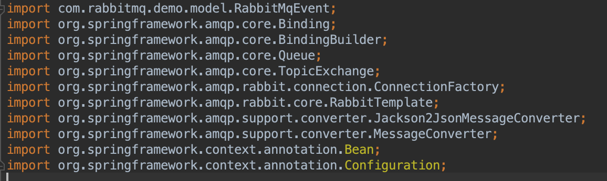
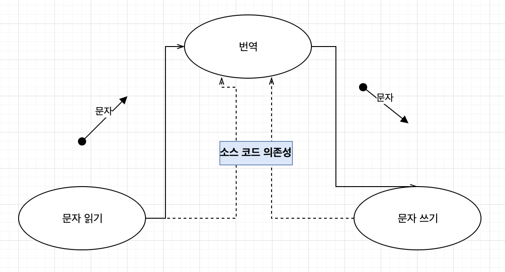
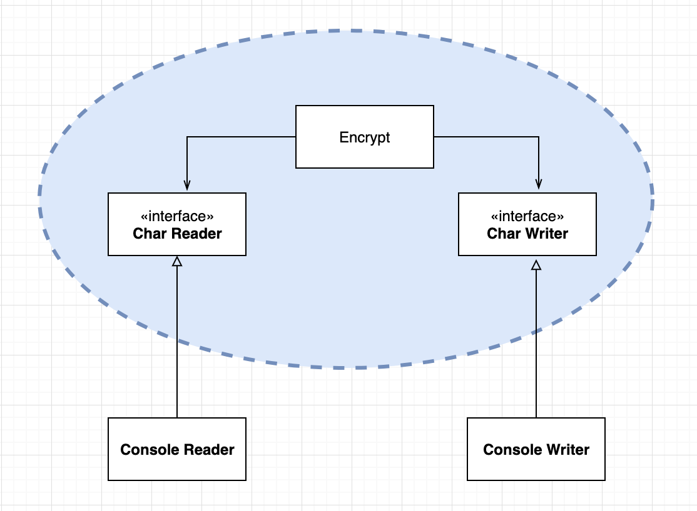
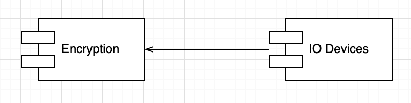

소프트웨어 시스템이란 정책을 기술한 것이다. 컴퓨터 프로그램은 각 입력을 출력으로 변환하는 정책을 상세하게 기술한 설명서이다.
{: width=”50%” height=”30%”}
소프트웨어 아키텍처를 개발하는 기술에는 정책을 신중하게 분리하고, 정책이 변경되는 양상에 따라 재편성하는 일도 포함된다. 동일한 이유로 동일 시점에 변경되는 정책은 동일한 수준에, 다른 시점에 변경되는 정책은 다른 수준에 위치하게 하며, 반드시 다른 컴포넌트로 분리해야 한다.

흔한 아키텍처 개발은 재편성된 컴포넌트들을 비순환 방향 그래프로 구성하는 기술을 포함한다. 이런 의존성은 소스코드, 컴파일 타임의 의존성이며 자바에서는 import에 해당한다. 컴파일러가 제대로 동작하기 위해선 이러한 의존성이 필요하다.
좋은 아키텍처라면 컴포넌트를 연결할때 저수준의 컴포넌트가 고수준의 컴포넌트에 의존하도록 설계해야 한다.
수준
: 입력과 출력까지의 거리
시스템의 입력과 출력 모두로부터 멀리 위치할 수록 정책의 수준은 높아진다.
입/ 출력을 다루는 정책이라면 시스템의 최하위 수준에 위치한다.

데이터의 흐름 : 굵은 실선 화살표
소스코드 의존성 : 점선
여기서 번역 컴포넌트는 시스템에서 최고 수준의 컴포넌트로 입/출력에서 가장 멀리 떨어져 있다. 데이터 흐름과 소스 코드 의존성이 같은 방향을 가리키지 않고 있는데 소스 코드 의존성은 그 수준에 따라 결합되어야 하며, 데이터 흐름을 기준으로 결합되서는 안된다.
1 | function encrypt() { |
잘못된 아키텍처 예 : 고수준 encrypt 함수가 저수준 readChar, writeChar 함수에 의존

위 다이어그램은 아키텍처의 개선 클래스다이어그램이다. 여기서 경계를 횡단하는 의존성은 모두 경계 안쪽으로 향한다. 경계로 묶인 영역이 이 시스템에서 최고 수준 구성요소이다.
정책을 컴포넌트로 묶는 기준은 정책이 변경되는 방식에 달려있다. 고수준 정책( 입/출력으로 부터 멀리 떨어짐 )은 저수준 정책에 비해 더 적게 변경되고, 보다 중요한 이유로 변경된다. 저수준 정책은 더 빈번히 변경되며, 긴급하게 덜 중요한 이유로 변경된다.
모든 소스코드 의존성의 방향이 고수준 정책을 향할 수 있도록 정책을 분리한다면 변경의 영향도를 줄일 수 있다. 시스템의 최저 수준에서 중요하지 않지만 긴급한 변경이 발생하더라도, 고수준 정책에 미치는 영향은 거의 없다.
이는 저수준 컴포넌트가 고수준 컴포넌트에 플러그인 되어야 한다는 관점으로 볼 수 있는데 다음의 다이어그램과 같다.
